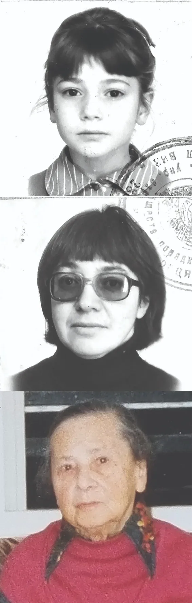

каждый выбирает
для себя
Это история о том как трудный выбор обернулся неожиданным, невероятным счастьем.
Меня зовут Галина. Я родилась в 1941 году в мире, который тогда назывался Советским Союзом. Эта история — не просто рассказ о прошлом, а путь моего личного пробуждения, который привёл меня к очень трудному, но как оказалось самому верному решению в моей жизни.
Это рассказ о том, почему в 1990 году в возрасте почти 50-ти лет я решила покинуть Советский Союз вместе с моей мамой, которой на тот момент было за восемьдесят, и моей маленькой дочерью, которой было всего семь лет.
Я решила назвать свою историю «Каждый выбирает для себя», потому что в конце концов, где бы мы ни родились и чему бы нас ни учили, каждому из нас приходится делать СВОЙ выбор. Выбор между страхом и дерзостью, между молчанием и живым словом , между выживанием и подлинной жизнью.
Это история о том, как свой выбор сделала я.
"Мы имеем возможность, именно возможность и уже наше дело воспользоваться ею или нет"

Про нашу
алию
Что значит нашу?
Это идея Маши: три женщины - мама, Маша и я - напишем об этом времени. А как же наша бабушка? Ведь…А мы напишем за неё — по её письмам. У меня есть её письма к Томочке и Эрику (они прислали их мне по моей просьбе), а также письма к Игорю, которые я попросила вернуть. Можно сказать, это письма с фронта — непосредственные, трогательные, искренние. Томочка и я не можем их читать — ревём и всё тут. Но деваться некуда.
Вот они
эти три женщины



Для кого это написанно?
Для Маши. Она не уехала, ее увезли. Для ее семьи. Они, британцы, не имеют представления ни о Советском Союзе, ни об Израиле, ни о том, что значит быть олим ходашим ми Русия в Израиле. На сколько Европа и мы имеем разную историю одних и тех же событий мне пришло в голову, когда я сказала новым своим родственникам: мое свидетельство о рождении выдано в первый день Второй Мировой войны и меня спросили: сентябрь1939-ого. Вот так, для нас это июнь 1941-ого, а их уже 2 года бомбят. И немного для тех, кто в России.
Маша давно и упорно просила: "Пиши, как всё это было". Даже тетрадку для этого купила - очень красивую. Я начала писать и время от времени читала Маше. И однажды она сказала: "Я хочу сделать из этого фильм." Мы начали снимать, но, увы, вскоре пришли к выводу: Маша - не Стивен Спилберг, а я - не Морган Фриман. Так родился этот сайт "Каждый выбирает для себя". Я ходила и бормотала эти стихи ("Каждый выбирает для себя" стихи Юрия Левитанского) то так, то сяк. И вдруг осознала - ну так я последние зо лет и живу в стране где у человека действительно есть выбор. Он - и только он - решает: "Дьяволу cлужить или пророку..." Я не хочу сказать что в Израиле нет жуликов, ловкачей и прочих . Но в Израиле есть возможность жить без всего этого, и при этом не нужно быть ни героем, ни борцом, а просто - в лучшем смысле этого слова - обывателем. У нас есть возможность. Именно возможность. И уже наше дело - воспользоваться ею или нет.
Моя история состоит из четырёх частей:
Первая глава рассказывает о том, как ко мне пришло ощущение невозможности продолжать жить в России — стране с её законами, а точнее, с беззаконием, где несчастное, унижаемое на каждом шагу общество забыло о чувстве собственного достоинства.
Вторая глава посвящена нашему новому началу в другой стране - жизни, полной испытаний, но также чудес, красоты и открытий. Это была земля, где нам пришлось строить всё с нуля, но каждый маленький шаг вперёд ощущался как настоящая победа.
Третья глава принадлежит моей маме. Через её письма вы увидите наш путь её глазами. Эти письма совсем не похожи на послания старой, очень больной женщины, оказавшейся на склоне лет в совершенно ином мире: другой климат, еда, одежда, праздники — да и вообще всё, всё другое. Она нисколько не растеряна, с радостью подмечает всё хорошее, не жалуется и не сетует на вполне естественные трудности.
И, наконец, последняя глава - это сборник маленьких историй, рассказанных моей дочерью, - порой забавных, порой трогательных.